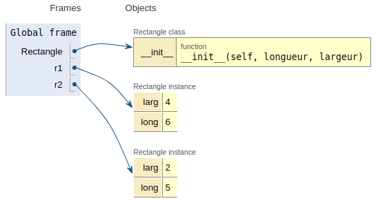

Vocabulaire de la programmation objet⚓︎
Introduction⚓︎
En python on ne manipule que des objets. On en a rencontré de plusieurs sortes depuis la classe de première. Le type d'un objet peut être obtenu avec la fonction ... type!
1 2 3 4 5 6 7 | |
Les paragraphes qui suivent ont pour objectif de:
- se familiariser avec tout le vocabulaire nécessaire à la compréhension de la construction des objets;
- présenter les bases permettant de créer ses propres classes d'objets.
Voyage en première classe avec les objets⚓︎
Descritption d'une classe⚓︎
Définition
Une classe est une structure qui peut contenir des variables et des définitions de fonctions.
On peut faire l'analogie avec une usine ayant des plans de construction et qui pourra donc construire des objets.
Dans le cas le plus simple, en python on définit une classe avec le mot clé class suivi d'un nom de classe (qu'on écrit avec une première lettre en majuscule, par convention) puis des : annonçant l'arrivée d'un bloc.
Construisons notre première classe. Il s'agit d'une classe permettant de construire des objets de type Rectangle.
1 2 3 4 5 6 | |
Une bonne habitude est de fournir une documentation. On trouve ensuite une définition de fonction __init__ qui sera détaillée plus loin.
Création d'un objet⚓︎
Pour construire un objet de type Rectangle, on fait suivre le nom de la classe de la liste d'arguments attendus par __init__ sauf self.
1 | |
1 | |
L'interpréteur nous informe qu'un objet a été créé. Néanmoins, construire un objet de cette façon n'est pas très utile. On va plutôt affecter l'objet créé à une variable.
1 2 | |
La classe permet de créer des objets. Ce processus de création d'objet est appelé instanciation et l'objet créé est une instance de la classe.
A ce stade, voici la situation relevée avec Pythontutor.

Chaque objet Rectangle créé possède ses propres variables larg et long. Ce sont les attributs de l'objet. On dit aussi attributs d'instance.
On peut accéder aux attributs faisant partie de l'interface de l'objet avec la notation objet.attribut.
1 | |
1 | |
Les attributs des objets sont mutables en python. Néanmoins, on évitera de recourir à cette propriété et on privilégiera l'interaction avec les objets via des méthodes (voir ci-dessous).
Manipuler les données⚓︎
Supposons que l'on veuille calculer l'aire ou la diagonale du rectangle correspondant à l'objet r1. On peut utiliser les attributs de r1.
1 2 3 4 | |
1 2 | |
Cependant, cela ne correspond pas au style de la programmation orientée objet. C'est la classe qui doit se charger de définir les traitements possibles sur les objets. Cela se fait par le biais de méthodes.
Définition
Une méthode est fonction rattachée à une classe.
On peut compléter la classe rectangle.
1 2 3 4 5 6 7 8 9 10 11 12 | |
1 2 | |
1 | |
Une méthode destinée à manipuler les objets se définit dans la classe comme une fonction ordinaire. L'interpréteur le confirme.
1 | |
1 | |
Par contre, on doit impérativement définir comme premier paramètre self. Il s'agit d'une référence vers l'objet sur lequel on opère.
Remarque
self est juste une convention adoptée par la communauté python, on aurait pu nommer ce paramètre autrement.
Lors de l'appel de la méthode sur l'objet, on ne fait pas apparaître self. En réalité, quand on écrit r1.surface(), c'est un raccourci pour Rectangle.surface(r1) où r1 est associé à self.
Méthodes spéciales⚓︎
Lors de la création d'un objet, python appelle automatiquement deux méthodes spéciales. L'une d'entre elle __init__ est chargée d'initialiser les attributs de l'objet. Son premier paramètre est aussi self.
Il existe d'autres méthodes spéciales, reconnaissables à leur syntaxe: elles commencent et se terminent par un double souligné (underscore en anglais) __. Elles ne sont pas spécifiquement au programmes de NSI mais seront quelques fois rencontrées dans des exercices.
A titre d'exemple, montrons une utilisation de la méthode __str__ qui est automatiquement appelé par print.
1 2 | |
1 | |
Ce n'est pas très explicite, on va définir la méthode __str__.
1 2 3 4 5 6 7 8 9 10 11 12 13 14 15 | |
1 2 | |
1 | |